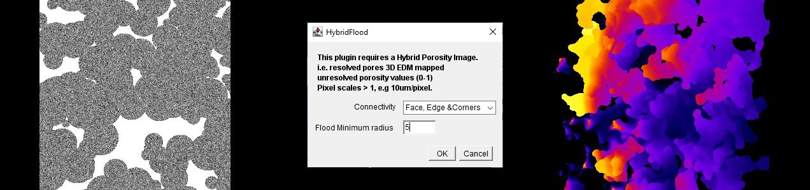
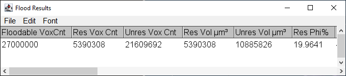
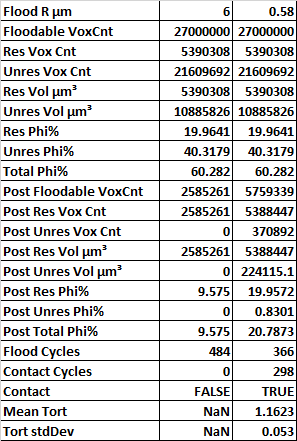
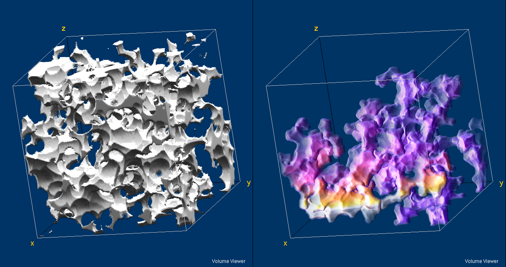
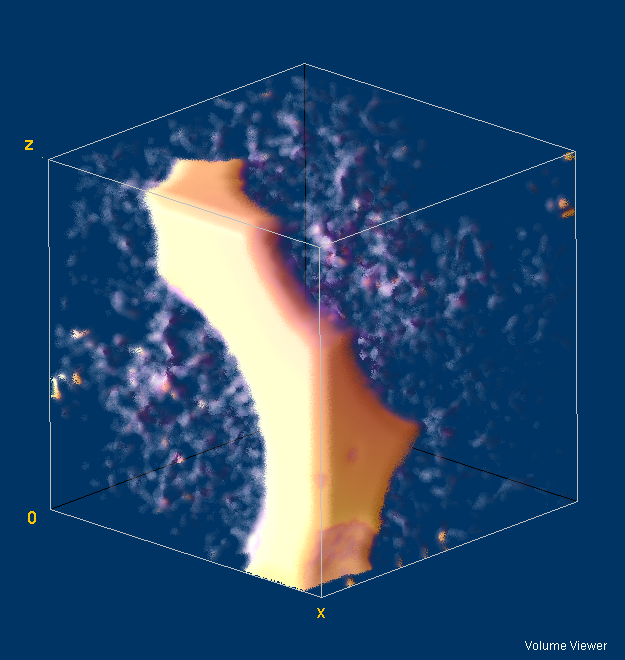

This plugin performs a 3D simulation of non-wetting imbibition in a "porosity" image. In a porosity image, open(resolved) voxels = 1, closed(solid) voxels = 0 and everything in between 0 and 1 is unresolved porosity. It is called a hybrid flooder because it combines flooding of both resolved and unresolved porosity1. See the DistanceLib page for more details

Initial synthetic noisy stack with point flood origin(left), HybridFlood Dialog(center), Connected voxel tortuosity(right).
HybridFloodFill operates only on 32-Bit stacks. HybridFloodFill uses the image's calibration units and voxels may be anisotropic.The flood begins at the front slice flooding all pore radii greater than or equal to Flood Min. It proceeds by flooding all connected voxels until no more can be flooded.
The plugin runs in several steps
The regions of resolved porosity are converted to exact Euclidean distances. The image voxel sizes must be greater than 1 user unit, otherwise resolved and unresolved voxel radii values will overlap.
A gray flood fill is used to identify connected regions up to the flood minimum radius.
In resolved porosity, the flood non-wetting surface curvature is restored by drawing Euclidean spheres as required by the EDM values at the flood terminal surface.
The tortuosity is calculated at each point in the flooded volume image.
If the flood reaches the back slice the mean tortuosity at the back slice is calculated.
Running the plugin.
In the plugin dialog select the desired connectivity.
Edit the Flood Minimum radius. The flood maximum radius is set by the code to the largest pore radius.

Portion of Flood Fill 3D Results. (The report is too long to fit on a page)

Results for two floods, Flood Min = 6um and 0.58um, shown side-by-side in Excel .
The top portion of the report is for the pre-flood volume. The lower half is post flood data. It is clear that at R=6um about half of the resolved porosity, none of the unresolved porosity is accessable and the flood did not reach the back slice. At R=0.58 all of the resolved porosity and a small portion of the unresolved porosity has been accessed. Also, the flood has reached the back slice and the mean tortuosity at that slice is 1.16. The standard deviation of the back slice tortuosity is a useful metric of sample uniformity. In a representative sample, the tortuosity at the back slice should converge toward a single value.

Synthetic Image2 Resolved Porosity(left) and Portion of Resolved porosity accessed by flood radius=6 Flood is from bottom to top in the image. Color in flooded image is accessed tortuosity ~1(blue) to ~4(white)

Rendering of 50x50x50um region at top of the R=0.58um flood image. Flood has begun to access the unresolved porosity.
At this writing, the validity of using porosity as a proxy for invading non-wetting fluid surface radius is not well established. See the DistanceLib comments.
The synthetic image was prepared by drawing random Euclidean spheres to 0.2 volume fraction on a Gaussian distribution of porosity 0.2<φ<0.8.